Прошло 20 лет с момента распада великой державы под названием СССР. Казалось, что ничто не в силах разрушить столь могучее государство. Но все пошло по непредвиденному сценарию.
Перестройка - это слово вызывает у нас разные чувства. Сверхдержавы не стало, а вместе с ней целой эпохи, в которой выросли наши родители. Время разделилось на 2 части -"до" и "после". Но нам есть что вспомнить.
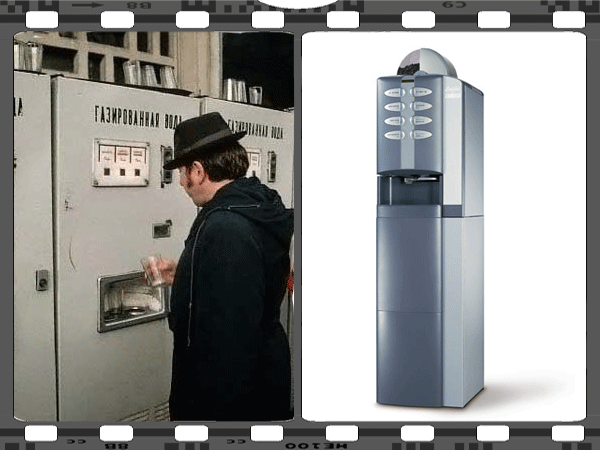
Почему-то первое, что пришло на ум – автоматы с газводой. В то время они пользовались большой популярностью. Встретить их можно было буквально на каждом шагу. Но вскоре время привычных уличных автоматов закончилось. На замену пришли новенькие кофейные автоматы с пластиковыми одноразовыми стаканчиками.
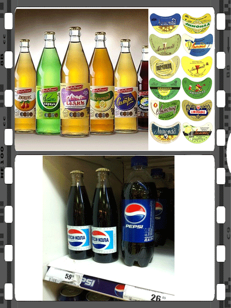
Раз уж зашла речь о напитках, как же не вспомнить о лимонаде: в стеклянной бутылке с металлической пробкой и двумя этикетками – прямоугольной в нижней части а также полумесяц-ярлычок на горлышке. "Буратино", "Байкал", "Колоколчик", ... - как это было вкусно
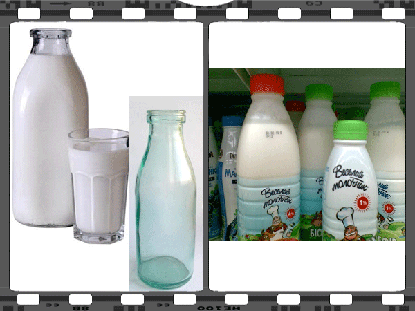
Настоящий кефир в стеклянной бутылке и нынешние био-кефиры.
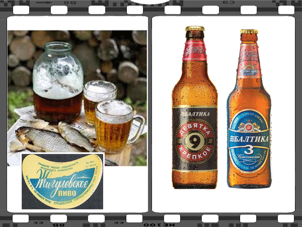
Тогдашнее пиво с таранькой. Пиво брали банками по 3л, поэтому до и после пива эффект был непредсказуемым.
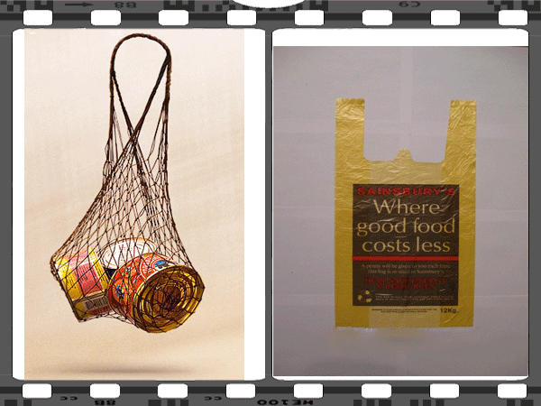
И как не вспомнить про авоську - хит тогдашнего времени. Сейчас авоськи уже нигде не встретишь в 90-е годы ее променяли на целлофановые пакеты.
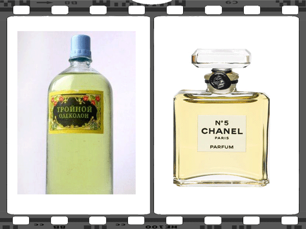
Ален Делон не пьет одеколон – слоган с СССР. А ведь были такие которые не против и выпить ядреную смесь.
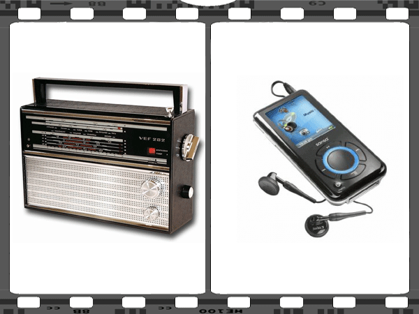
На фото VF 202 - культовый радиоприемник. Такие девайсы были в каждой семье. Как это было принято в то время, приемник зачастую брали на дачу, из-за чего они частенько выходили со строя. Уверен, у каждого наверняка где-нибуть завалялся подобный приемник.
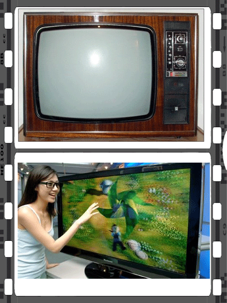
Телевизор чайка и 3d телевизор. Массовое средство информации, пропаганды и воспитания Советских граждан. Заседания компартии было завсегдатаем тогдашнего эфира.
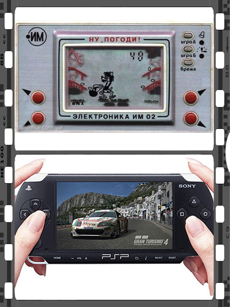
"НУ, ПОГОДИ!" или просто в народе "Волк ловит яйца": мега-игруха времен СССР. Не то что нынешние PSP.
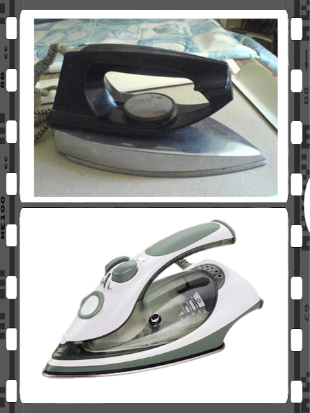
Классический утюг советского времени. У многих он даже сейчас в рабочем состоянии.
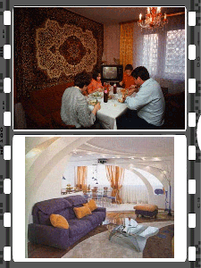
Фото до и после. Образцово-показательная квартира столичного образца: на стене ковер, в углу цветной телевизор, на потолке хрустальная люстра. Нынче ковры не в моде – даже на полу.
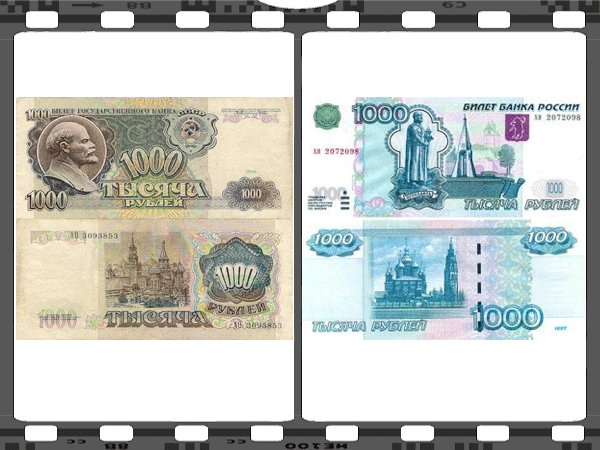
Но больше всего поменялись деньги. А деньги изменили людей. Потерялись былые идеалы. Совесть и справедливость променяли цветные упаковки иностранных товаров сомнительного качества.


Комментарии пользователей."